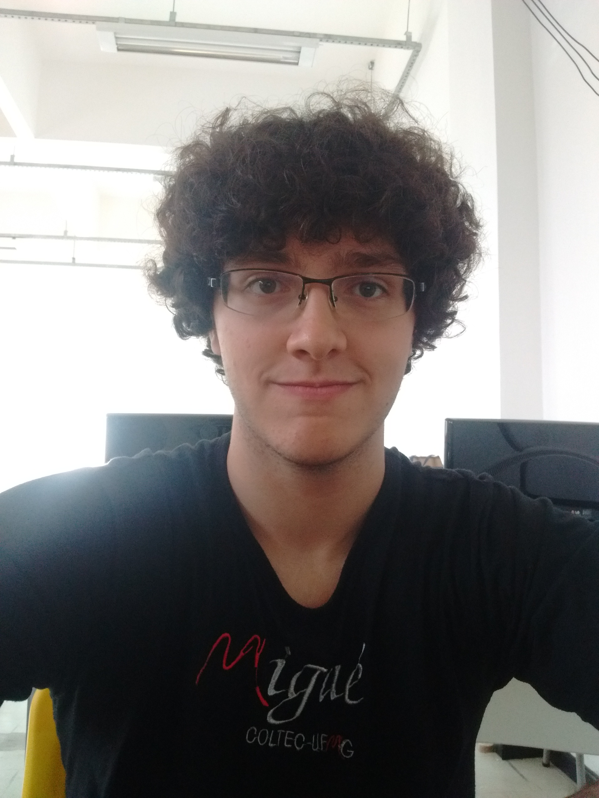

Dados Pessoais:
Raul Formiga Mansur
Informática - Coltec UFMG
Belo horizonte - MG
raulfmansur@hotmail.com
(31) 9836-1299
Projetista, jogador de FPS nas horas vagas, programador, violonista autodidata, web designer e aspirante a cozinheiro.
Experiências e Projetos:
Protótipo de Alarme de Casa - Introdução a Sistemas Lógicos
Projeto desenvolvido na disciplina: Introdução a Sistemas Lógicos
Controlador de Braço Robótico Remoto
Projeto desenvolvido na disciplina: Organização de Computadores e Sistemas
PIC JR. Desenvolvimento e aplicação de hardware em sistemas embarcados.
Desenvolvimento de um sistema embarcado com orientação do prof. Leandro Maia.
Estágio - Setor de Informática Coltec UFMG.
Estágio realizado no Setor de Informática do Colégio Técnico.
Formação
Curso Number One - Inglês.
Curso de inglês concluído.
Curso Técnico de Informática Integrado ao Médio - Coltec UFMG.
Cursando o curso técnico integrado à disciplinas do ensino médio.